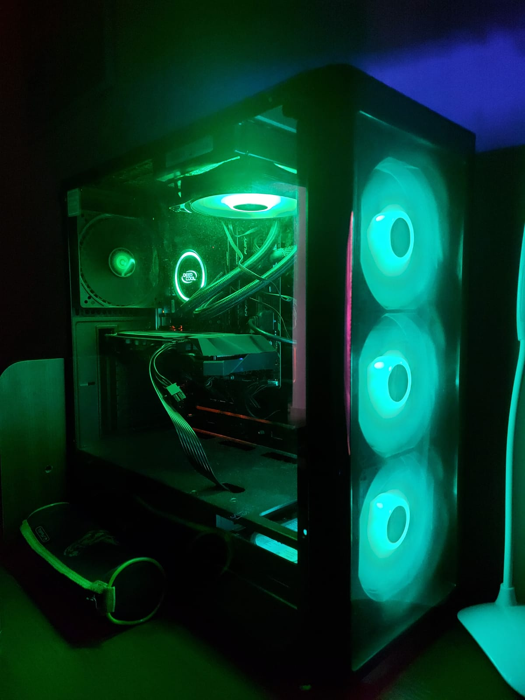

Un calculator, numit și sistem de calcul, computer sau ordinator, este o mașină de prelucrat date și informații conform unei liste de instrucțiuni numită program. În zilele noastre calculatoarele se construiesc în mare majoritate din componente electronice și de aceea cuvântul „calculator” înseamnă de obicei un calculator electronic. Calculatoarele care sunt programabile liber și pot, cel puțin în principiu, prelucra orice fel de date sau informații se numesc universale (engleză general purpose, pentru scopuri generale). Calculatoarele actuale nu sunt doar mașini de prelucrat informații, ci și dispozitive care facilitează comunicația între doi sau mai mulți utilizatori, de exemplu sub formă de numere, text, imagini, sunet sau video sau chiar toate deodată (multimedia).
Știința prelucrării informațiilor cu ajutorul calculatoarelor se numește informatică (engleză Computer Science). Tehnologia necesară pentru folosirea lor poartă numele Tehnologia Informației, prescurtat TI sau IT (de la termenul englezesc Information Technology).
În principiu, orice calculator care deține un anumit set minimum de funcții (altfel spus, care poate emula o mașină Turing) poate îndeplini funcțiile oricărui alt asemenea calculator, indiferent că este vorba de un PDA sau de un supercalculator. Această compatibilitate a condus la folosirea calculatoarelor cu arhitecturi asemănătoare pentru cele mai diverse activități, de la calculul salarizării personalului unei companii până la controlul roboților industriali sau medicali (calculatoare universale).
